Dockling
A live, per-session duck in your macOS Dock for Claude Code, showing what each session is doing in real time.
What it does
- One duck in the Dock for each Claude Code session you have open, not one duck for all of them.
- Each project gets its own duck color, and keeps it from then on.
- Hover over a duck to see which project it belongs to.
- The duck's pose changes in real time with what that session is doing (see the duck key below).
- A short sound plays when a session is ready for your next message, and another when it's waiting on you to answer something.
- When a session hands work off to helper agents, each helper gets its own baby duck.
Duck Key
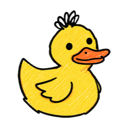
IdleJust started, or finished a reply without doing any work
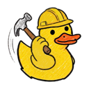
Running a commandRunning something in the terminal
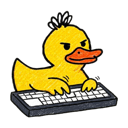
EditingEditing a file
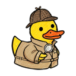
SearchingSearching the web or reading code
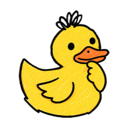
Using a toolUsing some other tool, or thinking right after you send a message
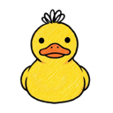
Waiting on youNeeds your answer or permission to keep going
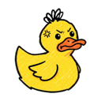
ErrorSomething it tried failed
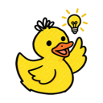
Task completeFinished a turn that did real work
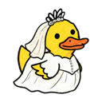
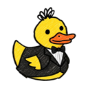
CommittingCommitting code
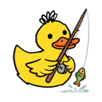
PullingPulling down the latest code
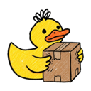
PushingPushing code up
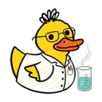
Running testsRunning the test suite
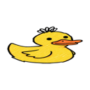
CompressingZipping up files, or compacting its own memory
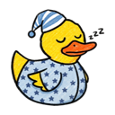
SleepyNothing has happened for 5 minutes; any activity wakes it right back up
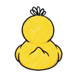
Session endingShown for a moment right before the duck leaves
Shown here in yellow. The actual color depends on the project.
Colors
The first time you use Claude Code in a project, its duck gets a random color, avoiding colors other open sessions are already using. That project keeps the same color from then on.
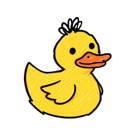
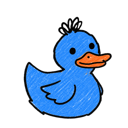
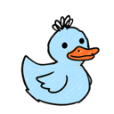
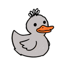
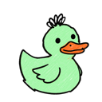
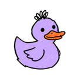
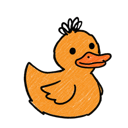
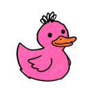
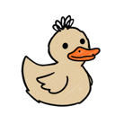
Baby ducks
- Each helper agent a session spawns gets a baby duck: same color as mama, 80% her size, sitting just to her left.
- The baby shows up while it's working, does a quick eureka when it reports back, then disappears.
- A session gets at most 3 babies at once, so a big burst of helpers doesn't take over the Dock.
- The Dock doesn't let apps choose their own icon order, so to keep each family together with mama on the right, the whole family briefly flickers and regroups when a new baby joins.
Try it
Dockling is free and runs on macOS. Download it at dockling.netlify.app.